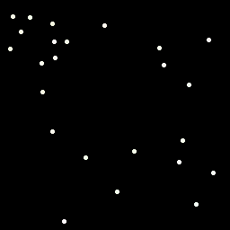
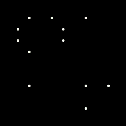
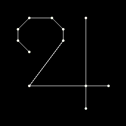

The image shows 256 dots on a black background. Each dot is almost white, but not quite (as clued by "It's not as black and white as one might think"). Each dot is one color. Most of the dots have an even red value. Consider only the ones with an odd red value (as clued by "focus on oddities"). The result is below:
Each green value among the remaining dots is shared by two dots. Replace each such pair with a new dot. Let the new dot's location and color be the average of the first two dots' (no rounding is needed). ("similarities" clues the common green value, and "mean" clues averaging.) The result is below:
Connect the dots with blue values one apart (as clued by "connect the dots"). The result is below:
This is an alchemical and astrological symbol standing for tin and Jupiter. Given the title of the puzzle, which one is the answer should be clear.
Answer: Jupiter
Note: If you found a very short message that wasn't mentioned above, that's explained here (the linked page has spoilers for another part of the puzzlehunt too).